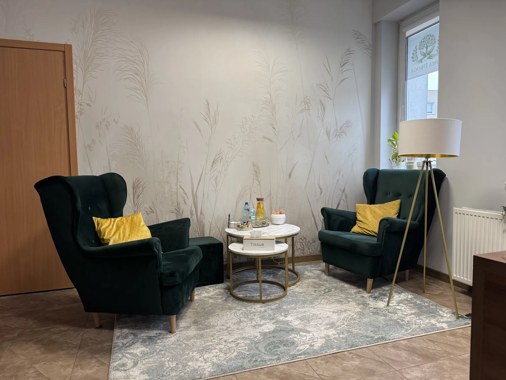
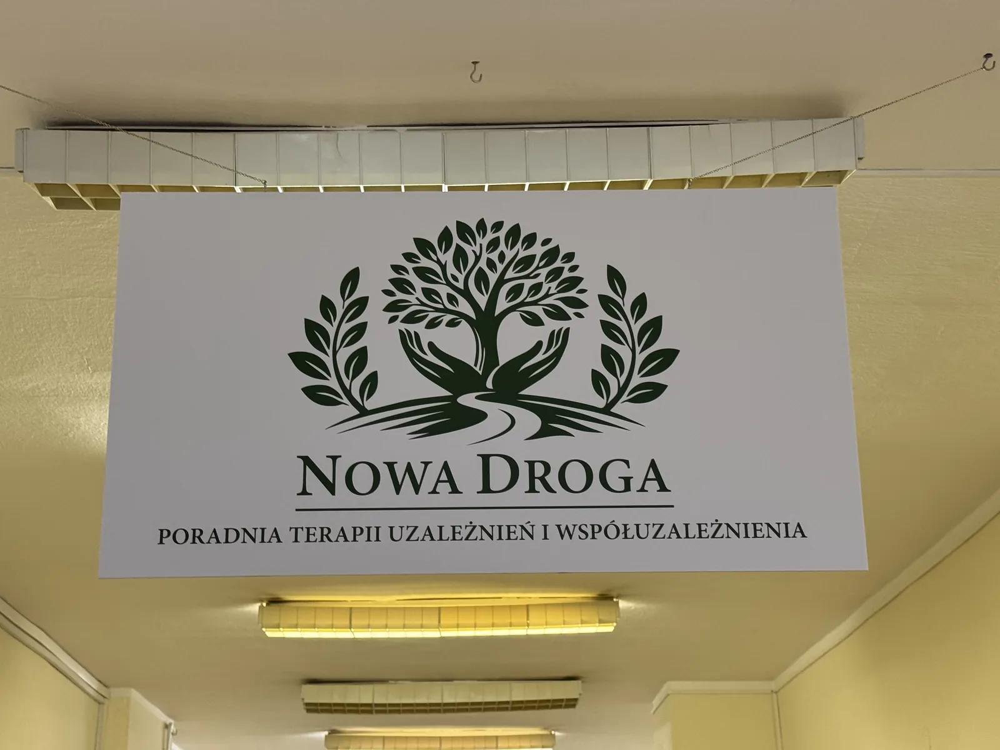
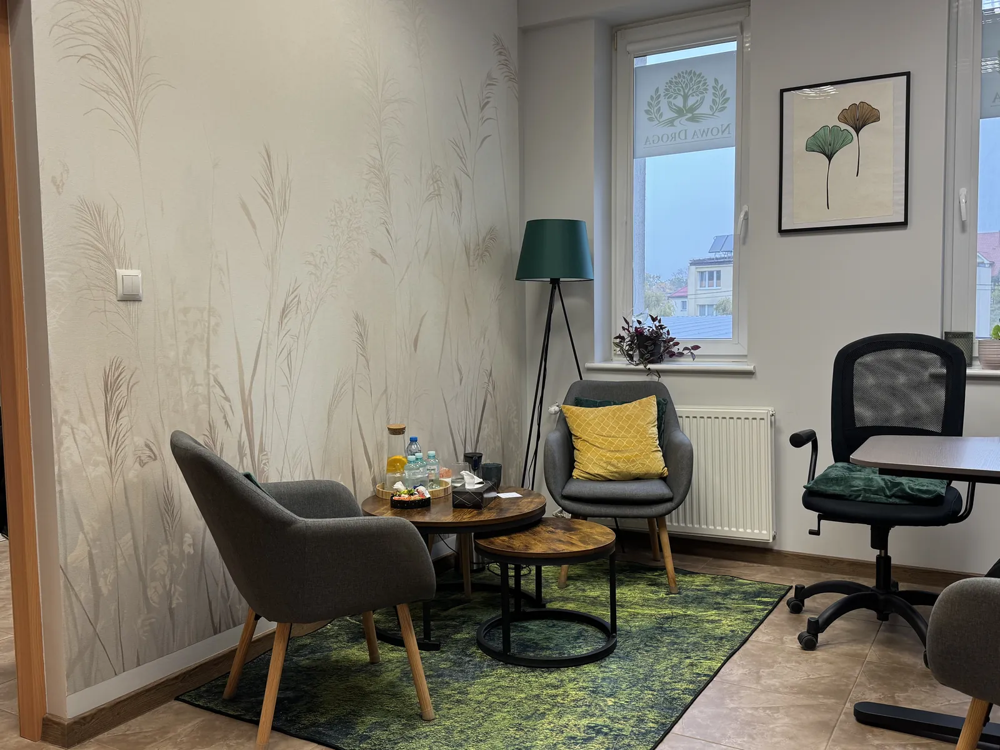
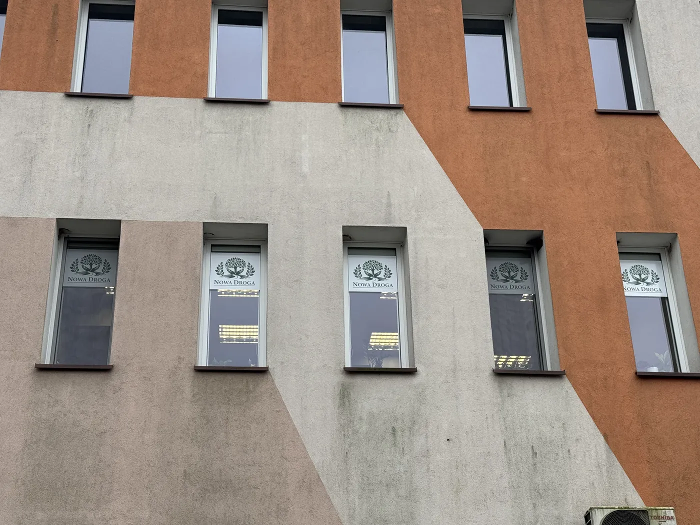
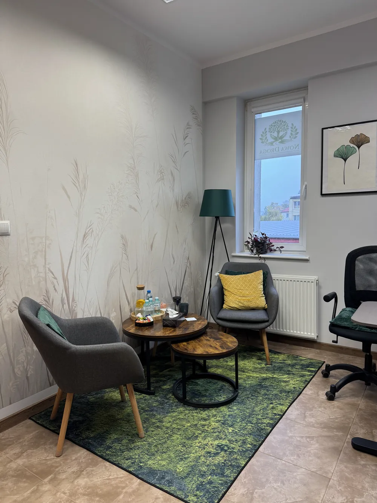

mgr Katarzyna Tokaj-Czaja
Pedagog, Certyfikowany Specjalista Psychoterapii Uzależnień

Poradnia terapii uzależnień i współuzależnienia w Barlinku.
+48 727 449 774Możesz przyjść od razu. Najlepiej osobiście, a jeśli się nie da, zadzwoń albo napisz.

Czas oczekiwania zależy od kolejki NFZ.

To, co jest mówione w gabinecie, zostaje w gabinecie.



Spokojna rozmowa w gabinecie, tylko we dwoje.
Jeśli nie możesz przyjść, spotkamy się przez internet.
Pomoc dla osób współuzależnionych i bliskich.
Pedagog, Certyfikowany Specjalista Psychoterapii Uzależnień

Pedagog, Certyfikowany Specjalista Psychoterapii Uzależnień
Specjalista Psychiatrii
Nie, skierowanie nie jest potrzebne.
Wizyty są refundowane przez NFZ.
Najlepiej osobiście w poradni, a jeśli się nie da, zadzwoń albo napisz maila. Czas oczekiwania zależy od kolejki NFZ.
Tak, oczywiście. Pomagamy także bliskim osób uzależnionych.
Tak. To, co jest mówione w gabinecie, zostaje w gabinecie.
Tego nie da się z góry określić. Zależy od pacjenta, jego zaangażowania i problemów, z którymi przychodzi.
Zadzwoń albo napisz
+48 727 449 774
I piętro, Centrum Medyczne. Szukaj drzwi 106 i 107.